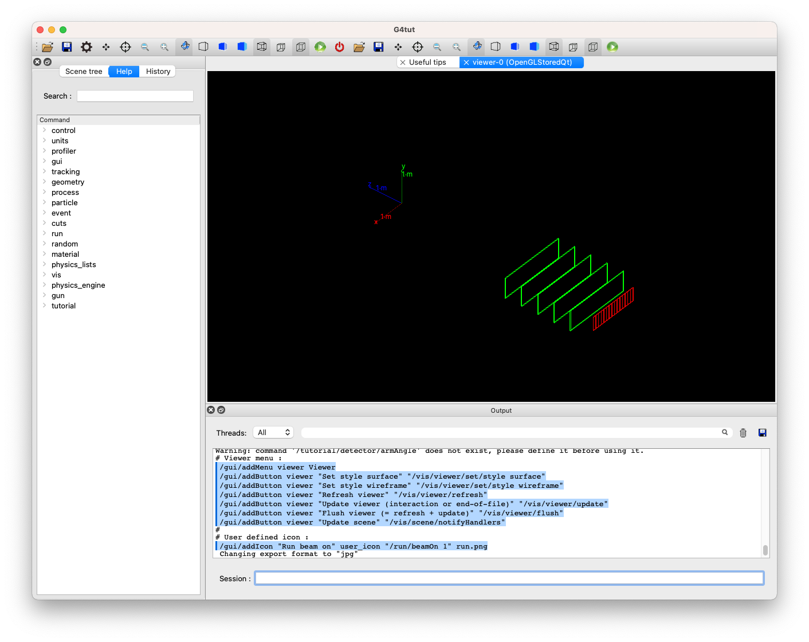
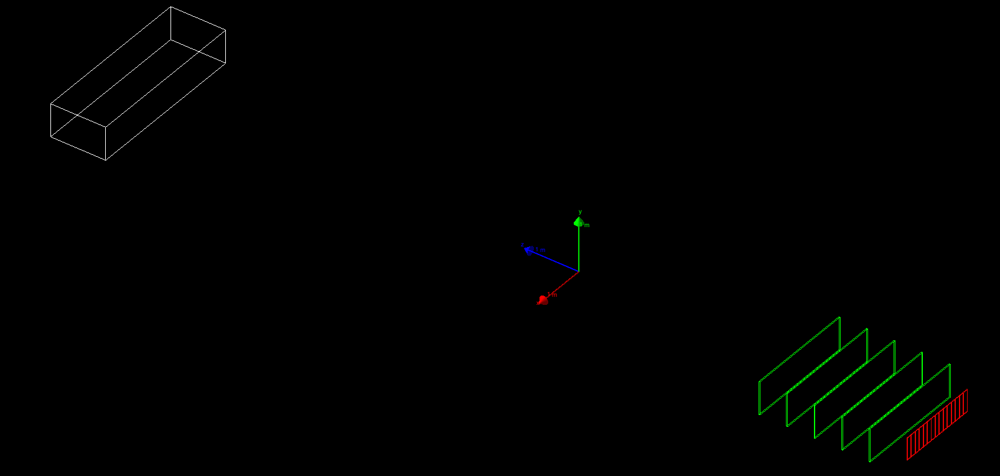
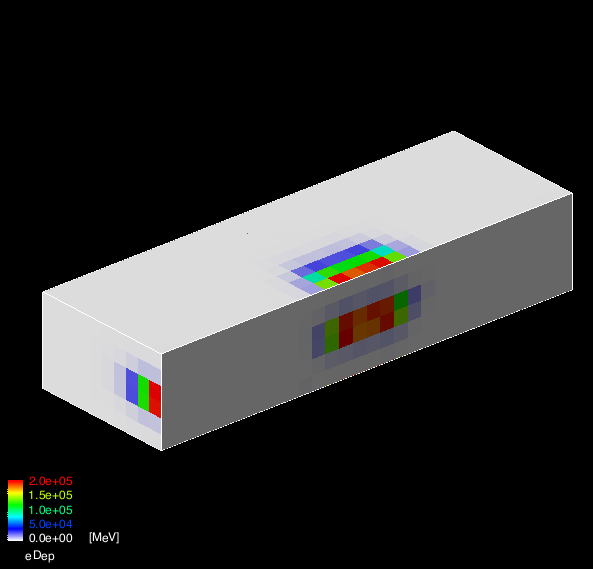

Hands on 2: a simple setup
In this hands on you will learn:
- How to define materials
- How to define a very simple geometry
- How to use command line scoring to record, store and display
simulation results
Material:
The problem code for this hands-on session
can be downloaded
here.
For your reference, the complete solution
is also available
here.
Copy the tar ball to your local area.
$ cd <tutorial> #change to your working directory
$ tar xzf HandsOn2-problem.tar.gz
$ cd HandsOn2-problem
$ ls #Take a look at the files
The name of the executable is G4tut.
Configure with cmake the Hands-on code, build it and run it:
$ cmake .
$ make -j 2 -f Makefile
$ ./G4tut
The following should appear:

The default behavior of the application when started without command
line arguments is to start the (G)UI (if enabled).
- If you use Qt-based GUI, you can type your command in the
Session: field at the right-bottom of the window.
You may also pick a command from the left side menu.
- If you do not use Qt but use OpenGL visualization,
you should find
Idle> prompt on your terminal screen.
Try ls, help and help <UI_command> to get help.
Familiarize with the Geant4 UI.
Exercise 0.a:
Question 1: Run 10 events.
/run/beamOn 10
exit
Exercise 0.b:
Now run the application with a macro file as command line argument:
$ ./G4tut run1.mac
Check the content of the macro file run1.mac,
start the application again interactively and using the help system
check the syntax of the few commands used in the macro file.
Note: Other macro files in the HandsOn2-problem directory do not work until you finish all the exercises.
Important note
Throughout this tutorial, where to edit the code is clearly marked in the corresponding file.
Open the specified file and search a comment line that matches to the exercise name.
That is the place you should add your code.
This is what it will look like:
File: Filename
//============================
// Exercise X.Y
new code to be added / modified will apper in red
Exercise 1.a:
Related lectures: Material definition, Geometry 1
In this example, we have a specific method DetectorConstruction::ConstructMaterials() w
here all materials that are used in the application are built.
Such method is not mandatory, but it may help to organize your code.
Create a CsI (Cesium Iodide)
material starting from the elements Iodine and Cesium.
Some of its properties:
- For Cs: Z=55 , Aeff=132.9*g/mol
- For I : Z=53 , Aeff=126.9*g/mol
- Density of crystal of CsI is: rho=4.51*g/cm^3
After adding the needed code, re-compile (no need to do the cmake step again)
and start the application once more.
Note that at the moment we have created the material (and so Geant4
kernel knows about it), but it is not yet used in any geometry element.
Observe Geant4 output, at the beginning of the
application the list of materials will be shown, starting from the
line The materials defined are : .
At the end of the method DetectorConstruction::ConstructMaterials()
there is a line that prints on screen the complete list of defined materials.
Note the paragraph relative to CsI and its properties.
The UI command: /material/g4/printMaterial CsI can
be issued at run-time to print the details of CsI. Check the other UI commands
available in the /material directory.
Solution
File: DetectorConstruction.cc
G4Element* el_i = new G4Element("Iodine","I", 53,126.9*g/mole);
G4Element* el_cs = new G4Element("Cesium","Cs",55,132.9*g/mole);
G4Material* mat_csi = new G4Material("CsI",4.51*g/cm3,2);
mat_csi->AddElement(el_i,1);
mat_csi->AddElement(el_cs,1);
Exercise 1.b:
Use NIST database to create Lead material.
Hint: You can use UI command
/material/nist/listMaterials to dump on screen the list of all
Gean4-NIST compounds materials.
Search for the name relative to lead.
Build again the application and run it again. Note that now the list
of materials includes lead element with all isotopes with natural abundances.
Hint: You can always use the command /material/g4/printMaterial <name> to print interactively the information on a specific material of your interest.
Solution
File: DetectorConstruction.cc
nistManager->FindOrBuildMaterial("G4_Pb");
Related lectures: Material definition, Geometry 1
In this example we will create a first geometry element. The goal of
this exercise is to show how to define a shape, a logical volume and a placement.
Exercise 2.a
Add a box of CsI to the setup.
The box has full dimensions (X times Y times Z): 300x60x100 cm, with CsI as material.
Place the box inside the logical volume second arm.
It should be placed at the very back of this mother volume.
At the end of the tutorials this simple box will become a calorimeter.
Re-compile and check that you obtain the correct behavior:

Solution
File: DetectorConstruction.cc
G4Material* material = G4Material::GetMaterial("CsI");
G4VSolid* hadCalorimeterSolid = new G4Box("HadCalorimeterBox",1.5*m,30.*cm,50.*cm);
G4LogicalVolume* hadCalorimeterLogical = new G4LogicalVolume(hadCalorimeterSolid,material,"HadCalorimeterLogical");
new G4PVPlacement(0,G4ThreeVector(0.,0.,3.*m),hadCalorimeterLogical,"HadCalorimeterPhysical",secondArmLogical,false,0,checkOverlaps);
Exercise 2.b
Change material of the box and observe effect on physics
simulation.
Modify the material of the box: instead of CsI, use the
material scintillator.
Simulate a single electron. Note how the material affects the shower dimensions:
The material is already created in the ConstructMaterials method, it has
a long name becasue it is a particular type of plastic. You need just to retrieve it
by name when using it in the G4LogicalVolume.
Related lecture: Scoring 1, User interface 1
In this exercise we will collect simulation information using
command line scoring.
A scoring mesh will be defined on top of the
volume created in Exercise 2.a, and different quantities will be recorded.
We will also show how to display and save in a text file.
Exercise 3.a
Enable command line scoring:
Instantiate a scoring manager in the main() function.
Solution
File: tutorial.cc
// Activate UI-command base scorer
G4ScoringManager * scManager = G4ScoringManager::GetScoringManager();
scManager->SetVerboseLevel(1);
Warning: You might have a compilation error in tutorial.cc. Read the error message and identify what you need to add to ammend the error.
Exercise 3.b
Score some quantities: energy deposit, number of steps.
Using only UI commands create a scoring box mesh that is placed on top of the
calorimeter box.
The mesh should have the same dimension as the
calorimeter and have (X times Y times Z) 30x6x10 voxels.
Score the following
quantities:
- Energy deposits
- Number of steps for gammas
- Number of steps for e-
- Number of steps for e+
Dump the scored quantities to files and verify the content.
Hint: Familialize UI commands for command-based scorier.
If you use Qt GUI, check the left-side help window. If you do not use Qt, use the help command.
Starting from the content of the file scoring.mac reproduce in an
interactive session the various steps used to score the quantities.
Some of the UI commands used here depends on the UI commands used before.
For example the commands used to define a particle filter are used in combination
with the preceding command defining the quantity to score.
The command /score/close signals that all scoring volumes and associated quantities
are now completed and configured.
There are two separate concepts to grasp when scoring:
- The scoring mesh: the shape, dimension and number of bins of the used 3D grid
- The quantities to be scored. You can have multiple quantities associated to a given
mesh, but you can also have multiple meshes in the same application even with
different geometries and possibily overlapping.
Solution
The macro scoring.mac shows all the UI commands needed
in this exercise. It can be used directly by the G4tut executable to create the output file:
$ ./G4tut scoring.mac
Note: Reduce the number of simulated events (default
2000) if the simulation takes too long.
Solution
File: scoring.mac
/run/initialize
########################################
#
# define scoring mesh
#
/score/create/boxMesh boxMesh_1
#
#Create a mesh large as the box
/score/mesh/boxSize 150. 30. 50. cm
#Position it over the box
/score/mesh/translate/xyz 0 0 8 m
#mesh voxel size of 5cm
/score/mesh/nBin 30 6 10
# All these quantities are associated
# with the mesh with name "boxMesh_1"
/score/quantity/energyDeposit eDep
/score/quantity/nOfStep nOfStepGamma
/score/filter/particle gammaFilter gamma
/score/quantity/nOfStep nOfStepEMinus
/score/filter/particle eMinusFilter e-
/score/quantity/nOfStep nOfStepEPlus
/score/filter/particle ePlusFilter e+
#
/score/close
#
/run/verbose 1
/gun/particle e-
/run/beamOn 2000
########################################
#
# Dump scores to a file: tell G4 which
# mesh and which quantity should go in the output file
#
/score/dumpQuantityToFile boxMesh_1 nOfStepGamma nOfStepGamma.txt
Exercise 3.c
Visualize scored quantities.
Using UI commands draw on the screen different scored
quantities. For example the energy deposit looks like:

Solution
The macro file draw.mac shows how to draw scored
quantities, in also shows how to draw slices using loops in UI
commands.
This macro should be executed afterscoring.mac:
$ ./G4tut
/control/execute scoring.mac
/control/execute draw.mac
File: draw.mac
########################################
#
# drawing projections
#
/score/drawProjection boxMesh_1 eDep
/score/drawProjection boxMesh_1 nOfStepGamma
/score/drawProjection boxMesh_1 nOfStepEMinus
/score/drawProjection boxMesh_1 nOfStepEPlus
#
########################################
#
# drawing slices
#
/vis/scene/create
/vis/sceneHandler/attach scene-1
/score/colorMap/setMinMax ! 0. 800.
/control/loop drawSlice.mac iColumn 0 10 3
File: drawSlice.mac
/score/drawColumn boxMesh_1 nOfStepGamma 0 {iColumn}
The macro files perform several views at the same time
(/score/drawProjection commands), try out the
views one at the time in the command line.
Created by:
Andrea Dotti
, May 2018
Updated by:
Makoto Asai and
Maurizio Ungaro
, February 2024